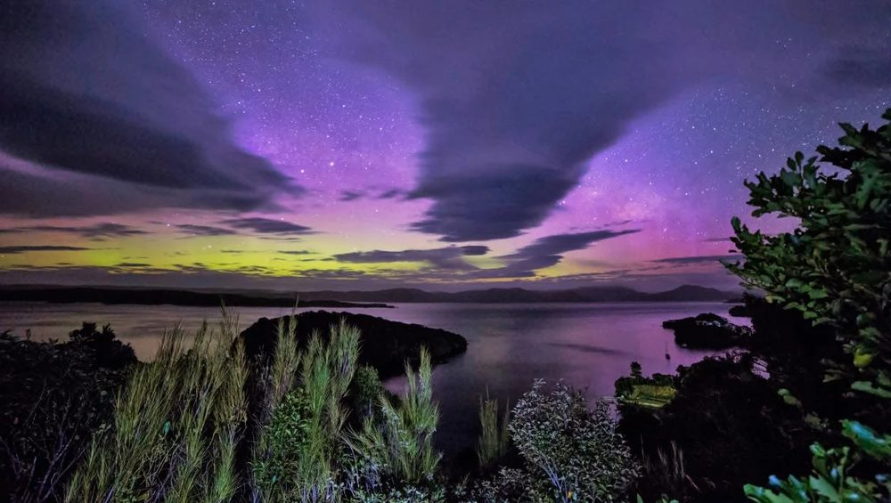

Highlights for visitors

Tourism to Rakiura Stewart Island has been popular since the late 19th century. In 1894 the Otago Witness referred to ‘visitors to the island being very numerous in the summer time, sometimes as many as a hundred being on the island at one time.’
In the 21st century tourism is now one of the island’s main industries, with around 30,000 visitors each year. At the 2013 census one-third of the workforce was employed in the accommodation and transport sectors. This compared with 11.4% for those sectors in Southland as a whole.
One of the highlights for tourists visiting Rakiura Stewart Island is the chance to witness the magical Aurora Australis, also known as the Southern Lights. This natural phenomenon lights up the night sky with vibrant colors and is a must-see for any nature lover. These beautiful displays directly inspired the island's Māori name, Rakiura—meaning 'Glowing Skies.'
Another unique experience on Rakiura Stewart Island is the Wild Kiwi Encounter. This tour allows you to spot the elusive kiwi in its natural habitat. These flightless birds are native to Aotearoa New Zealand and are a symbol of the country's unique wildlife.
Rakiura Stewart Island offers a range of outdoor activities, including hiking the Rakiura Track and exploring the beautiful Paterson Inlet. Whether you're a nature enthusiast or looking for adventure, there is something for everyone on this stunning island.
Stewart Island NZ. (2021, June 5). About Stewart Island: Highlights for visitors. Stewart Island NZ. https://stewartislandnz.com/about/